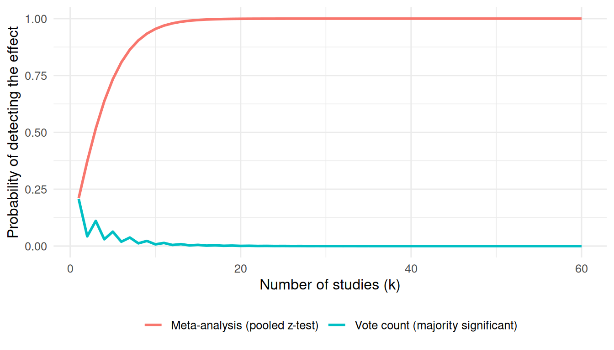
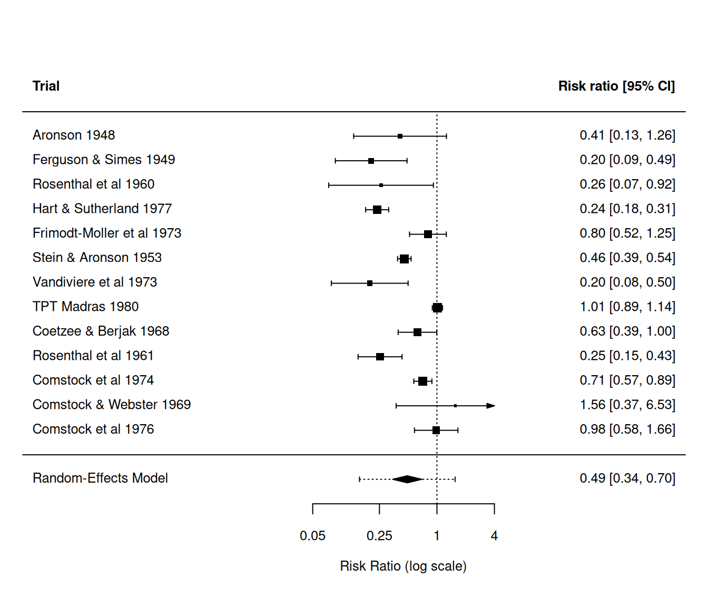

1 Introduction to Research Synthesis
A single study rarely settles a question. Samples are finite, measures are imperfect, and every study is run in one place, at one time, with one population and one version of the intervention. When a literature contains dozens or hundreds of studies of the same question, the useful question is no longer “what did this study find?” but “what does the body of evidence say, how certain is it, and how much do the results vary across settings?” Research synthesis is the collection of methods that answer that question in a transparent and reproducible way, and meta-analysis is its statistical core.
This chapter sets up the rest of the book. It explains why evidence needs to be synthesized formally, sketches how the field developed, distinguishes narrative reviews, systematic reviews, and meta-analyses, and defines what a meta-analysis actually estimates. A small simulation shows why counting significant results is a poor substitute for pooling estimates, and a second one shows why meta-analyses of a single paper’s studies deserve caution. The chapter closes with the limits of the method, a tour of the R ecosystem, a complete first analysis, and a roadmap.
1.1 Why synthesize evidence
There are three reasons to combine studies rather than read them one at a time. The first is precision. Individual studies in psychology, management, marketing, and much of clinical medicine are small relative to the effects they try to detect, so their estimates are noisy and their significance tests have low power. Pooling the information in many studies gives an estimate whose standard error shrinks roughly with the square root of the total sample size.
The second reason is generalization. Studies differ in populations, settings, dosages, measures, and designs. A synthesis can ask whether an effect holds across that variation, how much it varies, and which study features are associated with larger or smaller effects. A single study, however large, says little about the population of settings in which an intervention might be used.
The third reason is protection against bias in how evidence is read. Informal summaries tend to overweight vivid, recent, famous, or congenial studies. A synthesis that specifies its question, search, inclusion criteria, and analysis in advance, and reports each step, makes these choices visible and open to criticism (Cooper et al. 2019; Gurevitch et al. 2018). It also makes the synthesis updatable: when new studies appear, the analysis can be rerun rather than rewritten.
1.2 A short history
The idea of combining results is older than the name. In 1904 Karl Pearson collected data from several samples of British soldiers on typhoid (enteric fever) inoculation, computed the correlation between inoculation and both infection and mortality in each sample, and averaged them (Pearson 1904). The correlations were modest and irregular across samples, and Pearson called for more carefully designed investigation before the procedure was adopted routinely. Combining independent estimates had a longer history still in astronomy, and in the 1930s statisticians working on agricultural experiments developed methods for combining the results of several trials (Chalmers et al. 2002).
The modern field took shape in the 1970s. Light and Smith (1971) examined how reviewers resolve contradictory study results and criticized the habit of tallying significant and non-significant findings. Gene Glass introduced the term meta-analysis in his 1976 presidential address to the American Educational Research Association, defining it as the statistical analysis of a large collection of results from individual studies for the purpose of integrating the findings (Glass 1976). Smith and Glass (1977) applied the idea to several hundred controlled evaluations of psychotherapy and concluded that psychotherapy was, on average, effective. The response was sharp: Eysenck (1978) dismissed the exercise as “mega-silliness”, arguing that pooling studies of mixed quality and different therapies produced a meaningless average. Two of the standard criticisms of meta-analysis, “garbage in, garbage out” and “apples and oranges”, date from this exchange and are discussed in Section 1.7.
Statistical foundations followed quickly. Rosenthal (1979) formalized the “file drawer problem”, the worry that non-significant studies remain unpublished. Hedges and Olkin (1980) showed that vote counting can become less likely to detect a true effect as studies accumulate, and Hedges and Olkin (1985) laid out the theory of effect sizes, their sampling distributions, weighted estimation, and tests of homogeneity that underlies nearly every method in this book. In medicine, the push to base clinical practice on systematic summaries of randomized trials led to the founding of the Cochrane Collaboration in 1993, named after the epidemiologist Archie Cochrane, with the aim of preparing, maintaining, and disseminating systematic reviews of the effects of health care (Chalmers 1993). The Campbell Collaboration followed for social policy, education, and crime. Today meta-analysis is used across the sciences, from ecology to economics (Gurevitch et al. 2018), and its volume has grown so fast that redundant and conflicted meta-analyses have become a problem in their own right (Ioannidis 2016).
1.3 Narrative reviews, systematic reviews, and meta-analyses
Three terms are often used interchangeably but mean different things.
A narrative review summarizes a literature in prose, usually written by an expert who selects and interprets the studies. Narrative reviews are valuable for framing a field, tracing the development of ideas, and building theory. Their weakness is that the search, selection, and weighting of studies are implicit. Two experts can read the same literature and reach opposite conclusions without either being able to point to where their methods diverged.
A systematic review answers a pre-specified question using explicit, reproducible methods: a protocol, a documented search of multiple sources, eligibility criteria applied in duplicate, structured data extraction, and an assessment of risk of bias in each included study (Higgins et al. 2019). A systematic review need not contain any statistics. When studies are too different to combine, the synthesis may be structured narratively, for example by grouping studies and tabulating their results. Chapter 2 covers this workflow in detail.
A meta-analysis is the statistical combination of results from two or more studies. It is usually, and ideally, embedded in a systematic review, since a pooled estimate is only as trustworthy as the process that selected the studies feeding it. Meta-analytic methods are also applied outside systematic reviews, for example to combine the studies in a multi-study paper (Section 1.6) or the sites of a multi-lab replication. Throughout the book, “meta-analysis” refers to the statistical component and “systematic review” to the surrounding process.
1.4 What a meta-analysis estimates
Suppose there are \(k\) studies, and study \(i\) reports an effect size estimate \(y_i\) (a log risk ratio, a standardized mean difference, a Fisher-\(z\) correlation) with sampling variance \(v_i\), treated as known. Chapter 3 shows how to compute \(y_i\) and \(v_i\) from the statistics that studies report. What the meta-analysis estimates depends on the model one is willing to assume for the true effects \(\theta_i\) that the studies estimate.
In the common-effect (also called fixed-effect or equal-effects) model all studies estimate the same quantity:
\[ y_i = \theta + \varepsilon_i, \qquad \varepsilon_i \sim N(0, v_i). \]
The target is the single parameter \(\theta\), estimated by the inverse-variance weighted mean \(\hat\theta = \sum_i w_i y_i / \sum_i w_i\) with \(w_i = 1/v_i\) and \(\operatorname{SE}(\hat\theta) = (\sum_i w_i)^{-1/2}\).
In the random-effects model the true effects themselves vary across studies, because populations, interventions, and measures differ:
\[ y_i = \mu + u_i + \varepsilon_i, \qquad u_i \sim N(0, \tau^2), \qquad \varepsilon_i \sim N(0, v_i). \]
There are now two targets: the mean \(\mu\) of the distribution of true effects and its standard deviation \(\tau\). The mean alone answers “what is the effect on average across settings like these?”, but it does not say what to expect in a new setting. For that the relevant summary is the prediction interval, which under normality is approximately \(\hat\mu \pm t_{k-2,\,0.975}\sqrt{\hat\tau^2 + \operatorname{SE}(\hat\mu)^2}\) (Higgins et al. 2009; Riley et al. 2011). When heterogeneity is substantial, the confidence interval for \(\mu\) can exclude zero while the prediction interval comfortably includes it.
The choice between these models is a choice of estimand, not only of method. Under the common-effect model the question is whether “the” effect exists and how big it is. Under the random-effects model the question is about a distribution: its center, its spread, and the proportion of settings in which the effect is beneficial or harmful (Borenstein et al. 2010). A third reading, sometimes called the fixed-effects (plural) model, treats the \(\theta_i\) as fixed but different and interprets the weighted mean as the average effect in the particular set of studies at hand, without any claim about other settings (Rice et al. 2017). Chapter 4 develops these models formally, compares estimators of \(\tau^2\), and discusses inference with few studies.
1.5 Why vote counting fails
Before meta-analysis, a common way to summarize a literature was to count how many studies found a significant effect and declare the effect “established” if most did. This is called vote counting. It fails for a simple reason: whether a study reaches significance depends on its power as much as on the size of the effect. When the typical study is underpowered, most studies will be non-significant even when the effect is real, and a vote count will conclude that the evidence is mixed or negative (Light and Smith 1971; Hedges and Olkin 1980).
A small simulation makes this concrete. Consider twenty two-group studies with 30 participants per group, all estimating the same true standardized mean difference of \(\delta = 0.3\), a modest effect of the size common in the behavioral sciences.
set.seed(1904)
k <- 20; n <- 30; delta <- 0.3
# simulate raw data for one two-group study and keep the summary statistics
sim_study <- function(n, delta) {
x1 <- rnorm(n, mean = delta, sd = 1)
x2 <- rnorm(n, mean = 0, sd = 1)
c(m1 = mean(x1), m2 = mean(x2), sd1 = sd(x1), sd2 = sd(x2),
p = t.test(x1, x2, var.equal = TRUE)$p.value)
}
studies <- as.data.frame(t(replicate(k, sim_study(n, delta))))
studies$n1 <- n; studies$n2 <- n
# vote count
n_sig <- sum(studies$p < 0.05)
n_sig
#> [1] 2
# meta-analysis of the same studies (Hedges' g, common-effect model)
dat_sim <- escalc(measure = "SMD", m1i = m1, m2i = m2, sd1i = sd1, sd2i = sd2,
n1i = n1, n2i = n2, data = studies)
fit_sim <- rma(yi, vi, data = dat_sim, method = "EE")
fit_sim
#>
#> Equal-Effects Model (k = 20)
#>
#> I^2 (total heterogeneity / total variability): 0.00%
#> H^2 (total variability / sampling variability): 0.74
#>
#> Test for Heterogeneity:
#> Q(df = 19) = 13.9918, p-val = 0.7842
#>
#> Model Results:
#>
#> estimate se zval pval ci.lb ci.ub
#> 0.2526 0.0581 4.3458 <.0001 0.1387 0.3666 ***
#>
#> ---
#> Signif. codes: 0 '***' 0.001 '**' 0.01 '*' 0.05 '.' 0.1 ' ' 1Only 2 of the 20 studies are significant at the 5% level, so a vote count would conclude that the effect does not replicate. Yet the pooled estimate is \(\hat\theta = 0.25\) with 95% CI [0.14, 0.37] and \(p\) < .001. The data are perfectly consistent with a single true effect (the \(Q\) test gives \(p\) = 0.78), and the confidence interval covers the true value of 0.3. The studies do not disagree; they are simply too small to detect the effect one at a time. The power of each study here is only 0.21.
The problem gets worse, not better, as evidence accumulates. Suppose a reviewer declares an effect established if more than half of \(k\) studies are significant. If each study has power \(\pi\), the number of significant studies is binomial, and the probability that the vote count finds the effect is \(P(\text{Bin}(k, \pi) > k/2)\). When \(\pi < 0.5\) this probability goes to zero as \(k\) grows. The power of the pooled test, in contrast, goes to one, since the standard error of the pooled estimate shrinks as \(1/\sqrt{k}\). Figure 1.1 shows both curves for the design above.
ks <- 1:60
se_pooled <- sqrt((2 / n + delta^2 / (4 * n)) / ks) # approximate SE of pooled d
curves <- data.frame(
k = rep(ks, 2),
prob = c(1 - pbinom(floor(ks / 2), ks, pw),
pnorm(delta / se_pooled - qnorm(0.975))),
method = rep(c("Vote count (majority significant)", "Meta-analysis (pooled z-test)"),
each = length(ks))
)
ggplot(curves, aes(k, prob, colour = method)) +
geom_line(linewidth = 1) +
labs(x = "Number of studies (k)", y = "Probability of detecting the effect",
colour = NULL) +
theme(legend.position = "bottom")
Figure 1.1: Probability of concluding that an effect exists, by number of studies, when every study has 30 participants per group and the true standardized mean difference is 0.3. Vote counting (more than half significant) becomes less likely to detect the effect as studies accumulate; the pooled common-effect test becomes more likely.
The lesson generalizes beyond this example. Counting significant results discards the information in the effect estimates and their precision, confuses “not significant” with “no effect”, and is biased toward the null when studies are small. If studies report too little to compute effect sizes, better options exist than vote counting on significance: Chapter 3 shows how to recover effect sizes from test statistics and \(p\)-values, and the Cochrane Handbook describes structured alternatives when even that is impossible (Higgins et al. 2019).
1.6 Internal meta-analyses and p-hacking
Multi-study papers in psychology, consumer research, and management increasingly end with a meta-analysis of their own studies, sometimes called an internal or single-paper meta-analysis. The appeal is real: individual studies may be small and inconclusive, and a pooled estimate summarizes the paper’s evidence and supports cumulative science (McShane and Böckenholt 2017). The danger is that a pooled analysis of a small set of studies chosen and analyzed by the same authors inherits, and amplifies, every undisclosed choice made along the way.
Two assumptions are needed for an internal meta-analysis to be trustworthy (Vosgerau et al. 2019). First, none of the individual studies may be even slightly \(p\)-hacked, for example by choosing among dependent variables, covariates, or exclusion rules after seeing the data (Simmons et al. 2011). Because the same lab tends to make the same choices in every study, small biases do not average out across studies; they accumulate. Second, the set of studies must be complete: the authors must not have left out studies that “did not work”, or run additional studies until the pooled result became significant (Ueno et al. 2016). A file drawer of one or two studies per paper is enough to distort a five-study internal meta-analysis.
The following simulation, in the spirit of Vosgerau et al. (2019), shows how fast the false-positive rate grows. The true effect is zero. Each of five studies has 40 participants per group and measures three outcomes that correlate at 0.5. In the honest scenario the authors report the pre-specified first outcome. In the hacked scenario they report whichever outcome shows the largest effect, which is a mild form of selective reporting. A third scenario runs eight studies honestly but reports the five with the largest estimates. Estimates are drawn from their large-sample normal distribution, \(d \sim N(0, 2/n)\), which is adequate here.
set.seed(2019)
nsim <- 4000; n <- 40; m <- 3; rho <- 0.5
se_d <- sqrt(2 / n)
R <- matrix(rho, m, m); diag(R) <- 1
U <- chol(R)
# nsim x nstud x m array of estimated effects under the null
draw <- function(nstud) {
z <- matrix(rnorm(nsim * nstud * m), ncol = m) %*% U * se_d
array(z, c(nsim, nstud, m))
}
# two-sided p-value of a common-effect meta-analysis with equal variances
pool_p <- function(est) {
z <- rowMeans(est) / (se_d / sqrt(ncol(est)))
2 * pnorm(-abs(z))
}
d5 <- draw(5)
honest <- d5[, , 1] # pre-specified outcome
hacked <- apply(d5, c(1, 2), max) # best of three outcomes
d8 <- draw(8)[, , 1]
dropped <- t(apply(d8, 1, function(x) sort(x, decreasing = TRUE)[1:5]))
fpr <- c(
study_honest = mean(2 * pnorm(-abs(honest / se_d)) < 0.05),
study_hacked = mean(2 * pnorm(-abs(hacked / se_d)) < 0.05),
meta_honest = mean(pool_p(honest) < 0.05),
meta_hacked = mean(pool_p(hacked) < 0.05),
meta_5_of_8 = mean(pool_p(dropped) < 0.05)
)
round(fpr, 3)
#> study_honest study_hacked meta_honest meta_hacked meta_5_of_8
#> 0.052 0.063 0.050 0.223 0.202At the level of a single study, choosing the best of three correlated outcomes barely moves the two-sided false-positive rate, from 0.052 to 0.063. That looks harmless. In the internal meta-analysis the same habit raises the false-positive rate from 0.05 to 0.223, because the small upward bias is repeated in every study while the standard error of the pooled estimate shrinks. Quietly reporting five of eight null studies gives a false-positive rate of 0.202. The more studies a paper pools, the more precisely it estimates its own bias.
An internal meta-analysis is informative only if every study is reported, each was analyzed as pre-registered, and the decision to stop collecting studies did not depend on the results. When these conditions cannot be verified, treat a significant pooled estimate from a single paper as a summary of that paper’s evidence, not as independent confirmation. Pre-registration of each study and of the pooling plan is the most direct safeguard (Vosgerau et al. 2019; McShane and Böckenholt 2017).
The same logic applies to meta-analyses of published literatures, where selective publication and selective reporting play the role of the file drawer. Chapter 7 treats methods to detect and adjust for these biases, including \(p\)-curve (Simonsohn et al. 2014), selection models, and regression-based corrections.
1.7 Limits of meta-analysis
Meta-analysis is a tool for combining evidence, not for creating it. Three classic criticisms remain relevant, and each has a methodological answer that the later chapters develop (Sharpe 1997).
Garbage in, garbage out. Pooling biased studies yields a precise estimate of a biased quantity. Precision is not validity. Eysenck’s objection applies with full force to any meta-analysis that includes studies without assessing their risk of bias. The answer is not to exclude all imperfect studies by fiat, but to assess risk of bias with validated tools, examine whether effects differ by risk of bias, and grade the certainty of the pooled evidence accordingly (Chapters 2 and 15).
Apples and oranges. Studies that differ in population, intervention, comparator, and outcome may not estimate the same thing. Whether combining them is sensible depends on the question: “fruit” is a legitimate category for some purposes and not for others. Random-effects models make the heterogeneity explicit rather than assuming it away, and subgroup analysis and meta-regression ask whether study characteristics explain it (Chapters 4 and 5). A large \(\tau\) with a wide prediction interval is itself a finding: the average effect is a poor guide to what will happen in any particular setting.
The file drawer. If studies with significant or favorable results are more likely to be published, found, or fully reported, the studies available to a meta-analysis are a biased sample (Rosenthal 1979). Comprehensive searching, including trial registries and grey literature (Chapter 2), reduces the problem; small-study and selection-model methods (Chapter 7) can diagnose and partly correct it, but no statistical method fully recovers studies that were never seen.
Two further limits deserve mention. Associations between study characteristics and effect sizes are observational, even when every included study is a randomized trial, because studies were not randomized to their characteristics. And meta-analyses can be numerous, overlapping, and conflicted: many topics have several published meta-analyses with different inclusion criteria and conclusions (Ioannidis 2016). Transparent protocols, open data, and reproducible code are the best defense, and they are a theme throughout the book.
1.8 The R ecosystem for meta-analysis
R has the most complete set of meta-analysis tools of any statistical environment. The CRAN Task View on meta-analysis (https://CRAN.R-project.org/view=MetaAnalysis) lists well over a hundred packages. Table 1.1 lists the ones used most in this book.
| Package | Purpose |
|---|---|
| metafor | General framework: effect sizes, common/random-effects and multilevel models, meta-regression, diagnostics, plots |
| meta | Convenient interfaces for standard pairwise analyses and publication-ready forest plots |
| metadat | About a hundred published meta-analytic datasets used as examples throughout |
| clubSandwich | Cluster-robust variance estimation with small-sample corrections for dependent effects |
| netmeta | Frequentist network meta-analysis |
| metaSEM | Meta-analytic structural equation modeling |
| brms | Bayesian multilevel models via Stan, including meta-analytic models |
| bayesmeta | Bayesian random-effects meta-analysis with exact posterior computation |
| robvis | Risk-of-bias summary and traffic-light plots |
| PRISMA2020 | PRISMA 2020 flow diagrams |
The workhorse is metafor (Viechtbauer 2010), which implements effect size
computation (escalc()), common-effect, random-effects, and mixed-effects models (rma()),
multilevel and multivariate models (rma.mv()), and a large set of diagnostics and plots. The
meta package offers a higher-level interface that many applied researchers find convenient
(Balduzzi et al. 2019). Datasets come from metadat, which is loaded automatically with metafor.
Dependent effect sizes are handled with clubSandwich (Pustejovsky and Tipton 2017), network
meta-analysis with netmeta (Balduzzi et al. 2023), meta-analytic structural equation models
with metaSEM (M. W.-L. Cheung 2015), and Bayesian models with brms (Bürkner 2017) and
bayesmeta (Röver 2020). Each chapter loads the packages it needs explicitly.
1.9 A first meta-analysis in R
This section runs a complete meta-analysis in four steps, so that the vocabulary of later chapters has something concrete to attach to. Each step is explained briefly and revisited in depth later.
The data are 13 trials of the Bacillus Calmette-Guerin (BCG) vaccine against tuberculosis
(Colditz et al. 1994), available as dat.bcg in metadat. For each trial we have the number of
tuberculosis cases and non-cases in the vaccinated and control groups.
head(dat.bcg, 4)
#> trial author year tpos tneg cpos cneg ablat alloc
#> 1 1 Aronson 1948 4 119 11 128 44 random
#> 2 2 Ferguson & Simes 1949 6 300 29 274 55 random
#> 3 3 Rosenthal et al 1960 3 228 11 209 42 random
#> 4 4 Hart & Sutherland 1977 62 13536 248 12619 52 random1.9.1 Step 1: compute effect sizes
The natural effect size for a binary outcome in a trial is the risk ratio. Meta-analysis works on
the log scale, where the sampling distribution is closer to normal and the variance has a simple
form. escalc() adds the log risk ratio yi and its sampling variance vi to the data.
dat <- escalc(measure = "RR", ai = tpos, bi = tneg, ci = cpos, di = cneg,
data = dat.bcg, slab = paste(author, year))
dat[1:4, c("author", "year", "yi", "vi")]
#>
#> author year yi vi
#> 1 Aronson 1948 -0.8893 0.3256
#> 2 Ferguson & Simes 1949 -1.5854 0.1946
#> 3 Rosenthal et al 1960 -1.3481 0.4154
#> 4 Hart & Sutherland 1977 -1.4416 0.0200The first trial has \(y_1\) = -0.889, a risk ratio of 0.41: vaccinated participants had about 59% lower risk of tuberculosis than controls. Chapter 3 covers effect sizes for binary, continuous, and correlational data and their variances.
1.9.2 Step 2: fit a random-effects model
The trials were run in very different places, from the southern United States to Northern
Europe, so a common true effect is implausible. rma() fits a random-effects model, estimating
\(\tau^2\) by restricted maximum likelihood (REML) by default.
res <- rma(yi, vi, data = dat)
res
#>
#> Random-Effects Model (k = 13; tau^2 estimator: REML)
#>
#> tau^2 (estimated amount of total heterogeneity): 0.3132 (SE = 0.1664)
#> tau (square root of estimated tau^2 value): 0.5597
#> I^2 (total heterogeneity / total variability): 92.22%
#> H^2 (total variability / sampling variability): 12.86
#>
#> Test for Heterogeneity:
#> Q(df = 12) = 152.2330, p-val < .0001
#>
#> Model Results:
#>
#> estimate se zval pval ci.lb ci.ub
#> -0.7145 0.1798 -3.9744 <.0001 -1.0669 -0.3622 ***
#>
#> ---
#> Signif. codes: 0 '***' 0.001 '**' 0.01 '*' 0.05 '.' 0.1 ' ' 1The estimated mean log risk ratio is \(\hat\mu\) = -0.715 (SE = 0.18), clearly different from zero. Heterogeneity is large: \(\hat\tau\) = 0.56 on the log scale, \(I^2\) = 92.2%, and the \(Q\) test rejects homogeneity (\(Q\) = 152.2 on 12 degrees of freedom). The estimate of \(\tau\) is the more interpretable of these: it is the standard deviation of true log risk ratios across settings, on the same scale as the effect. Chapter 4 discusses the choice of \(\tau^2\) estimator and of confidence-interval method (for example Hartung-Knapp), and Chapter 5 explains why \(I^2\) alone is not a measure of how much effects vary.
1.9.3 Step 3: interpret on the risk-ratio scale
predict() back-transforms the mean and its intervals to the risk ratio scale and adds the
prediction interval.
pred <- predict(res, transf = exp, digits = 2)
pred
#>
#> pred ci.lb ci.ub pi.lb pi.ub
#> 0.49 0.34 0.70 0.15 1.55On average across settings like these, vaccination multiplies the risk of tuberculosis by 0.49 (95% CI 0.34 to 0.70), roughly halving it. The 95% prediction interval, 0.15 to 1.55, is far wider: in a new setting comparable to these trials, the true effect could plausibly range from a large reduction in risk to no benefit, or even a modest increase in risk. That spread is the most decision-relevant feature of this evidence. Chapter 5 shows that much of it is explained by the absolute latitude of the trial site.
1.9.4 Step 4: draw a forest plot
The forest plot is the standard display of a meta-analysis: each study’s estimate and confidence interval, with box size proportional to its weight, and the pooled estimate as a diamond at the bottom (Figure 1.2).
forest(res, atransf = exp, at = log(c(0.05, 0.25, 1, 4)), xlim = c(-10, 6),
header = c("Trial", "Risk ratio [95% CI]"), addpred = TRUE, cex = 0.8)
Figure 1.2: Forest plot of 13 BCG vaccine trials (risk ratios, log scale) with the random-effects summary. The dotted line extending from the summary polygon is the 95% prediction interval.
Several trials favor the vaccine strongly, a few show essentially no effect, and the confidence intervals of some trials do not overlap. A reader of the forest plot sees both the average benefit and the heterogeneity that the prediction interval quantifies. A complete analysis would go further: it would explore moderators (Chapter 5), check for small-study effects (Chapter 7), assess the influence of individual trials (Chapter 8), rate the certainty of the evidence and report it (Chapter 15). The same four steps, though, are the skeleton of every analysis in the book.
1.10 Roadmap of the book
The book is organized in four parts.
Part I, Foundations, consists of this chapter, the systematic review workflow from question to risk-of-bias assessment (Chapter 2), and effect sizes and their conversions (Chapter 3).
Part II, Core Methods, develops the statistical machinery used in nearly every meta-analysis: common-effect and random-effects models (Chapter 4); heterogeneity, subgroup analysis, and meta-regression (Chapter 5); dependent effect sizes from the same study, including multilevel models and robust variance estimation (Chapter 6); publication bias and small-study effects (Chapter 7); and sensitivity analysis and diagnostics (Chapter 8).
Part III, Advanced Methods, extends the framework: Bayesian meta-analysis (Chapter 9), network meta-analysis for comparing several interventions (Chapter 10), meta-analytic structural equation modeling (Chapter 11), multivariate, dose-response, and individual participant data meta-analysis (Chapter 12), diagnostic test accuracy (Chapter 13), and the synthesis of causal estimates from quasi-experimental designs (Chapter 14).
Part IV, Reporting, covers rating the certainty of evidence with GRADE and reporting to PRISMA 2020 and related standards (Chapter 15), and ends with a workflow checklist (Chapter 16).
Readers new to meta-analysis should read Chapters 2 to 8 in order. Readers who know the basics can go directly to the chapter for their problem; each chapter states what it assumes.
1.11 Key takeaways
- Research synthesis answers questions that single studies cannot: what the body of evidence says, how precisely, and how much effects vary across settings.
- A systematic review is a transparent, reproducible process; a meta-analysis is the statistical combination of results, ideally embedded in such a review.
- The common-effect model estimates one parameter; the random-effects model estimates the mean and the standard deviation of a distribution of true effects. The prediction interval, not the confidence interval, describes what to expect in a new setting.
- Vote counting on statistical significance is biased toward the null when studies are underpowered and can become less accurate as studies accumulate. Pool effect estimates instead.
- Internal (single-paper) meta-analyses amplify small, undisclosed analytic choices and selective inclusion of studies. They are trustworthy only when every study is reported and analyzed as pre-registered.
- Meta-analysis cannot fix biased primary studies, incomparable studies, or missing studies; it can make these problems visible and quantify their likely impact.
1.12 Further reading
Borenstein et al. (2021) is the most accessible full-length introduction to the concepts in this chapter, and Cooper et al. (2019) is the standard reference handbook for research synthesis in the social and behavioral sciences. Higgins et al. (2019) is the authoritative guide for systematic reviews of health interventions. Hedges and Olkin (1985) remains the classic statement of the statistical theory. For history, Chalmers et al. (2002) is short and readable; Gurevitch et al. (2018) surveys the role of meta-analysis across scientific fields. On internal meta-analyses, read Vosgerau et al. (2019) alongside McShane and Böckenholt (2017) for the two sides of the argument. Viechtbauer (2010) and Balduzzi et al. (2019) are practical introductions to the two main R packages.